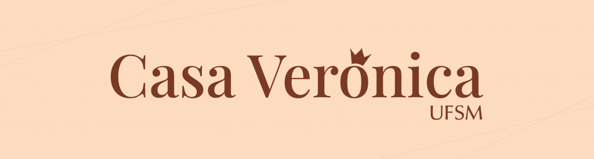
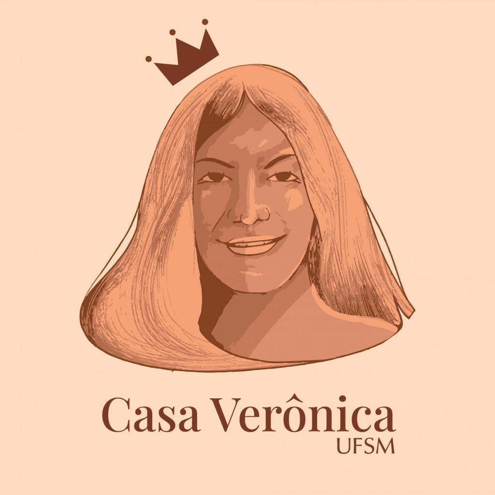
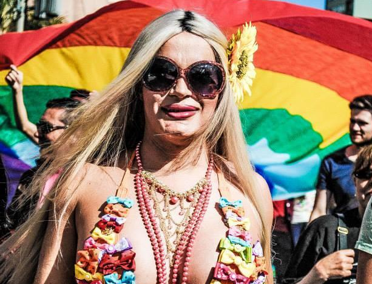

A história da Casa Verônica está relacionada à trajetória de Verônica Oliveira, mulher trans e ativista do movimento LGBTQIAPN+ em Santa Maria. Conhecida como Mãe Loira, Verônica construiu redes de moradia, cuidado e solidariedade em um contexto marcado pela exclusão e pela violência contra pessoas trans e travestis.
Esta seção reúne relatos sobre sua trajetória e sobre as práticas de acolhimento que marcaram sua atuação, além de apresentar o Espaço Multiprofissional Casa Verônica da UFSM, criado em 2021 e nomeado em sua homenagem. Embora ligados pela memória e pelo compromisso com os direitos, a casa de acolhimento mantida por Verônica e o atual espaço institucional da Universidade são experiências distintas.

Ilustração: Noam Wurzel
Quem foi Verônica Oliveira

Imagem Verônica Oliveira 1
Imagem Verônica Oliveira 2
Verônica Oliveira
Verônica Oliveira foi uma mulher trans e ativista do movimento LGBTQIAPN+ em Santa Maria. Conhecida como Mãe Loira, ela mantinha uma casa de acolhimento que oferecia moradia e apoio a pessoas LGBTQIAPN+ em situação de violência e exclusão. Os testemunhos audiovisuais reunidos pela equipe descrevem uma trajetória marcada pela busca de autonomia, pela construção de redes comunitárias e pela criação de condições melhores de vida para outras mulheres trans e travestis.
Sua Atuação
A sua atuação não se limitava ao espaço doméstico, pois os relatos também destacam iniciativas de solidariedade na comunidade, articulações em torno da saúde e participação em mobilizações por dignidade e direitos. Essa trajetória precisa ser apresentada a partir de suas ações, de sua presença comunitária e das relações que ajudou a construir, não apenas a partir da violência que interrompeu sua vida (Verônica foi assassinada em 2019).
Homenagem da Casa Verônica
A escolha de seu nome para o Espaço Multiprofissional Casa Verônica da UFSM é uma forma institucional de reconhecer e manter viva sua memória. Conhecer essa história permite compreender porque acolhimento, proteção, acesso a direitos e memória coletiva ocupam lugar central neste projeto.
A casa, as redes e as práticas de acolhimento
Alojamento
Nos testemunhos reunidos pela equipe, o alojamento da Vila Urlândia aparece como um espaço construído e ampliado com participação de Verônica e das moradoras. Mais do que oferecer um teto, a casa articulava moradia, convivência e condições para que mulheres trans e travestis pudessem organizar projetos de vida em um contexto que frequentemente lhes negava acesso a direitos básicos.
Um dos episódios narrados é a criação de um mini mercado interno para que as moradoras tivessem acesso a produtos básicos sem precisar enfrentar preconceitos nos comércios do bairro. O detalhe revela como o acolhimento, naquele contexto, também envolvia soluções concretas para necessidades cotidianas e para a segurança das pessoas acolhidas.
Solidariedade
Os relatos também descrevem ações de solidariedade que ultrapassavam o alojamento, incluindo campanhas comunitárias, festas, arrecadações e apoio a famílias em situação de vulnerabilidade. Ao apresentar esses episódios, o objetivo deste projeto é contextualizar o cenário de exclusão e destacar a capacidade de ação das pessoas envolvidas, evitando transformar situações de violência em imagens sensacionalistas.

Placeholder
Placeholder invisivel mobile
Cuidado, ativismo e legado
Placeholder
A luta de Verônica
A memória de Verônica Oliveira também passa pela atuação pública. Os documentos e testemunhos reunidos pela equipe destacam sua participação em mobilizações LGBTQIAPN+, a defesa do respeito ao nome social e ações comunitárias relacionadas à dignidade e à segurança da população trans em Santa Maria.
Legado deixado
O legado permanece também no modo como sua trajetória é lembrada por companheiras e em sua homenagem no nome do Espaço Multiprofissional Casa Verônica da UFSM. Essa ligação entre memória e instituição deve ser explicada sem sugerir que a casa mantida por Verônica e o espaço universitário são a mesma organização,
Casa Verônica da UFSM
Presença na UFSM
O Espaço Multiprofissional Casa Verônica é vinculado ao Observatório de Direitos Humanos e à Pró-Reitoria de Extensão da Universidade Federal de Santa Maria. Foi criado pela Resolução UFSM nº 064, de 3 de novembro de 2021, no contexto da Política de Igualdade de Gênero da Universidade.
A Casa tem como propósito articular ações de promoção da igualdade de gênero, enfrentamento e responsabilização em casos de violência e assistência. Na prática, o espaço desenvolve atividades educativas — como rodas de conversa, oficinas e cursos —, oferece acolhimento psicossocial e orientação jurídica e articula ações com redes de assistência da Universidade e da saúde pública.
Escolha do nome
O nome foi escolhido por consulta à comunidade, com mais de 1.500 votos; “Casa Verônica UFSM” recebeu 39% dos votos. A homenagem reconhece Verônica de Oliveira, mulher trans e ativista do movimento LGBTQIAPN+ em Santa Maria, que mantinha uma casa de acolhimento para pessoas LGBTQIAPN+ em situação de violência.
Placeholder
Placeholder invisivel mobile
CONHEÇA A INSTITUIÇÃO
A Casa Verônica UFSM oferece acolhimento psicossocial e orientação jurídica para demandas relacionadas a violência de gênero e outras questões vinculadas à temática, além de atividades formativas e de convivência. Consulte a página oficial de serviços para verificar público atendido, modalidade presencial ou remota, horários, formulários e contatos atualizados.